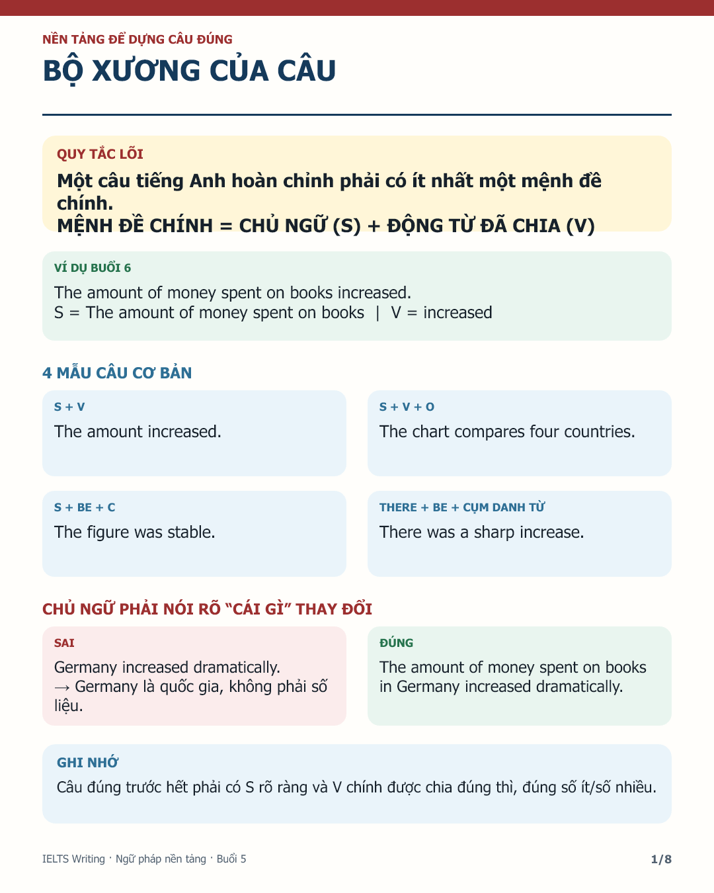
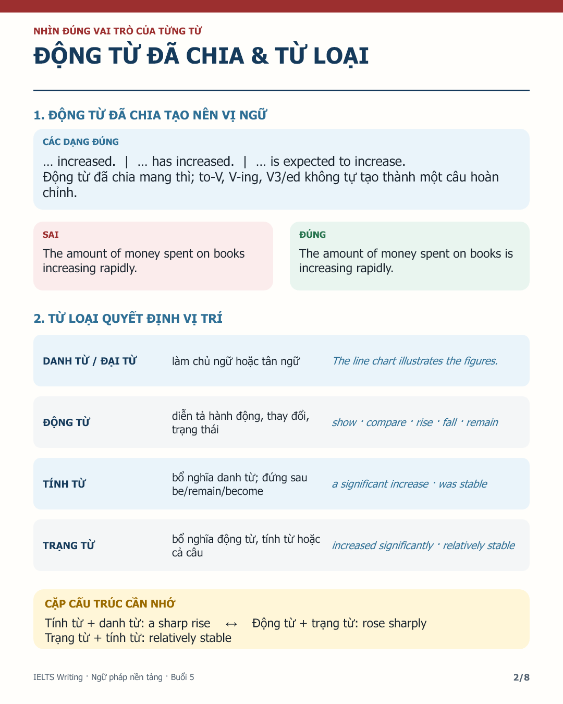
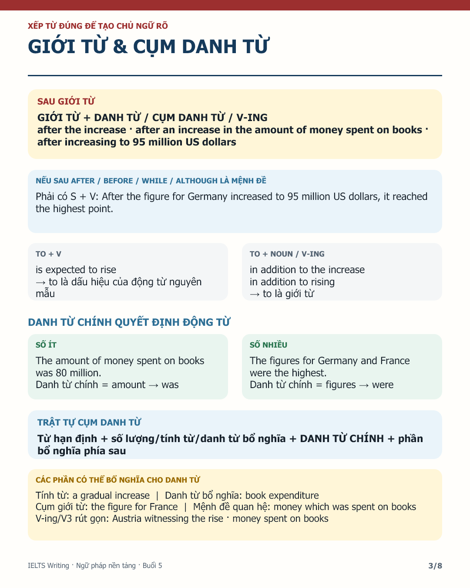
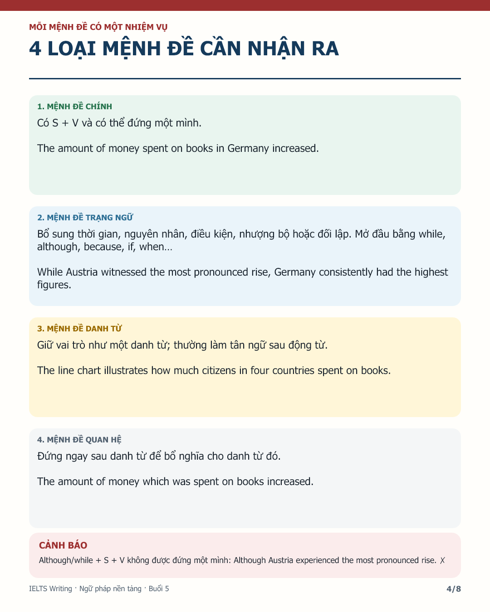
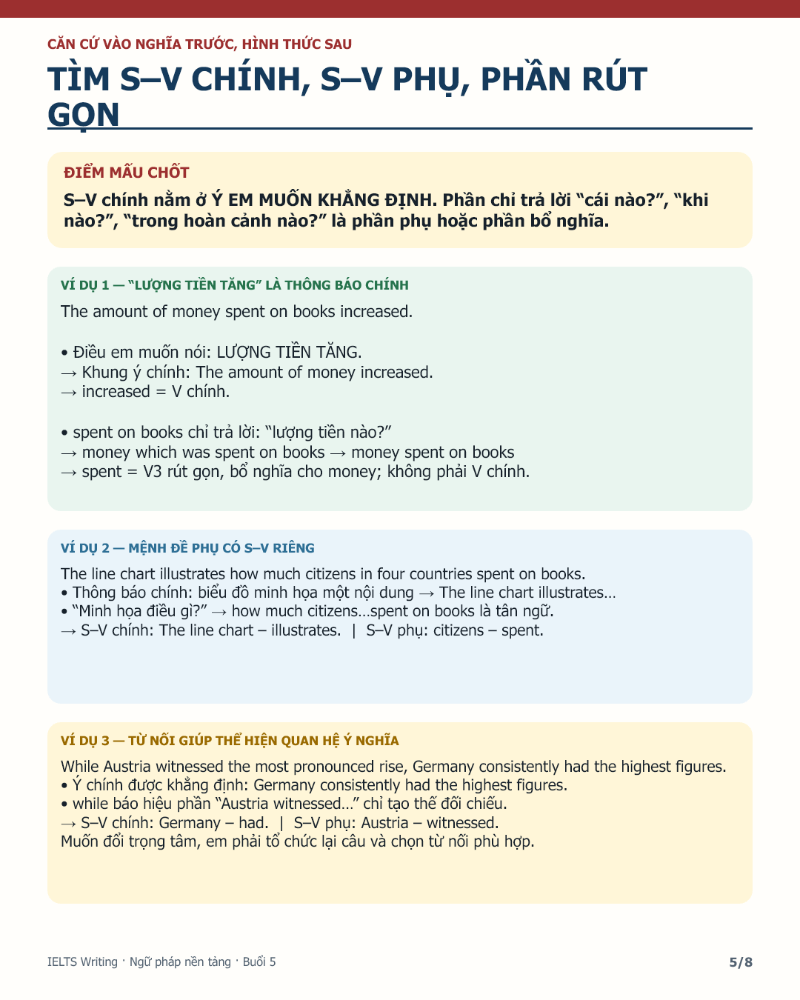
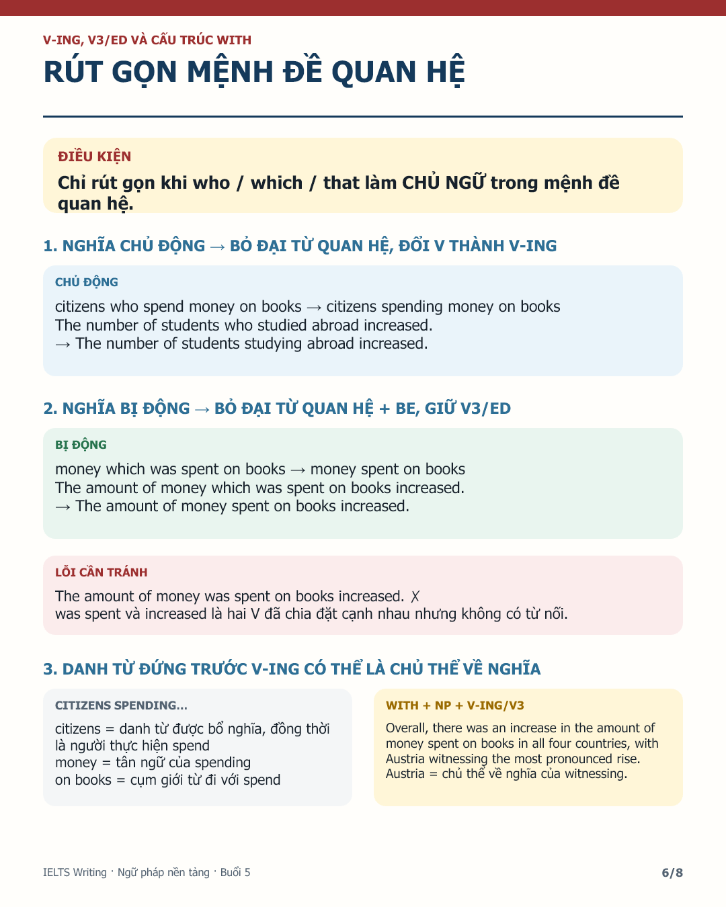
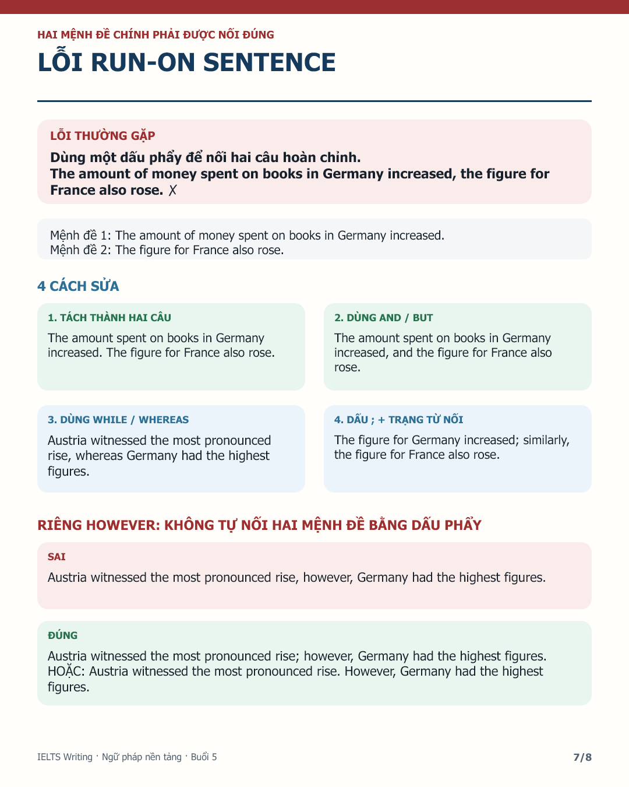
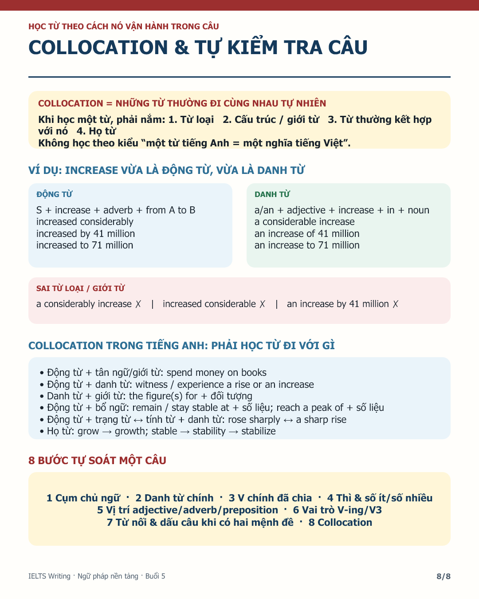

IELTS WRITING
BUỔI HỌC VIẾT SỐ 05
TỔNG QUAN IELTS WRITING TASK 1 + NGỮ PHÁP NỀN TẢNG
BÀI TẬP VỀ NHÀ
- Chép tay đầy đủ bài giảng Tổng quan IELTS Writing Task 1.
- Chép tay đầy đủ cả 8 trang Ngữ pháp nền tảng ở phần dưới, theo đúng thứ tự; không bỏ ví dụ và phần ghi nhớ.
- Nộp các trang vở bằng ảnh lẻ hoặc 01 file PDF quét rõ nét, đủ sáng và đúng chiều.
01 | CHÉP BÀI GIẢNG TASK 1
◆ YÊU CẦU BẮT BUỘC
✓ Chép đầy đủ toàn bộ nội dung bài giảng.
✓ Vẽ hoặc chép lại đầy đủ mọi biểu đồ, bảng số liệu và chú thích.
✓ Trình bày sạch, đúng thứ tự; không bỏ trang, không cắt mất nội dung.
02 | NGỮ PHÁP NỀN TẢNG
YÊU CẦU CHÉP VỞ
Đọc và chép đầy đủ cả 8 trang theo đúng thứ tự. Không bỏ phần ví dụ và phần ghi nhớ.








03 | NỘP VỞ CHÉP BUỔI 5
◆ BÀI CẦN NỘP
Nộp đủ phần chép bài giảng Task 1 và 8 trang Ngữ pháp nền tảng. Em có thể tải từng ảnh lẻ hoặc quét toàn bộ thành 01 file PDF.
Ảnh hoặc bản quét phải rõ nét, đủ sáng, đúng chiều và xếp theo đúng thứ tự trang.
NỘP VỞ CHÉP BUỔI 5